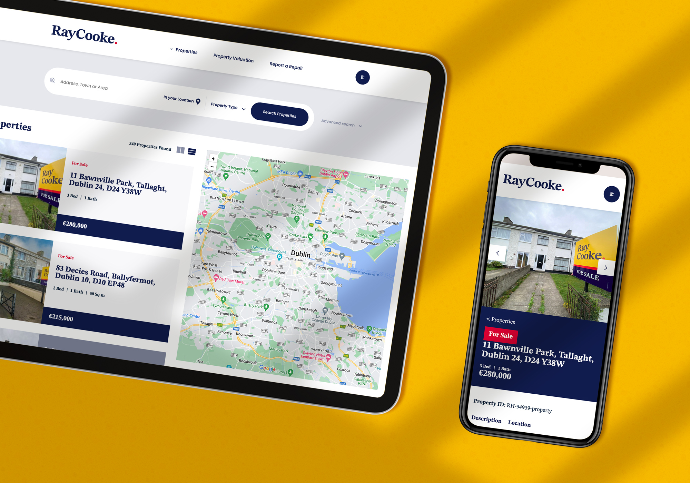
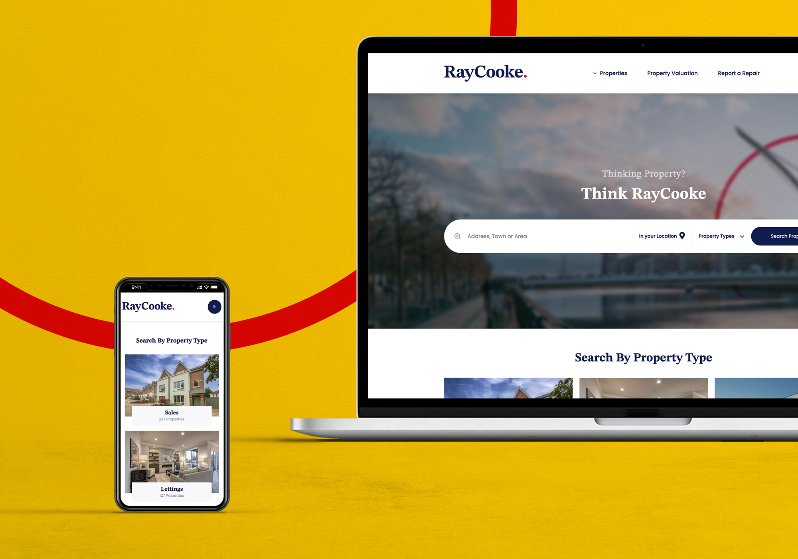
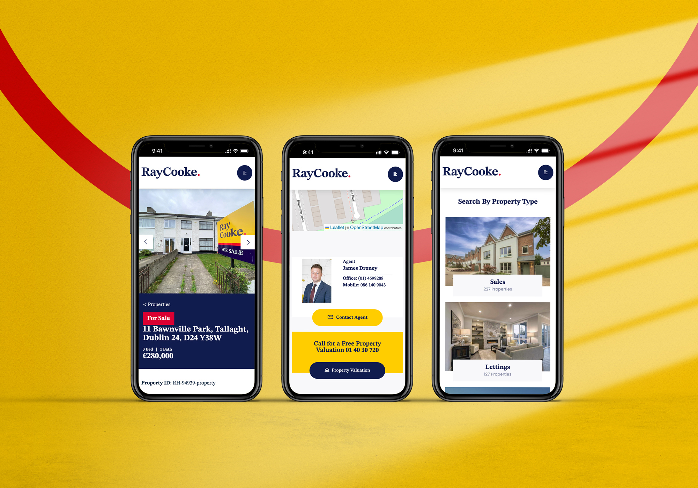
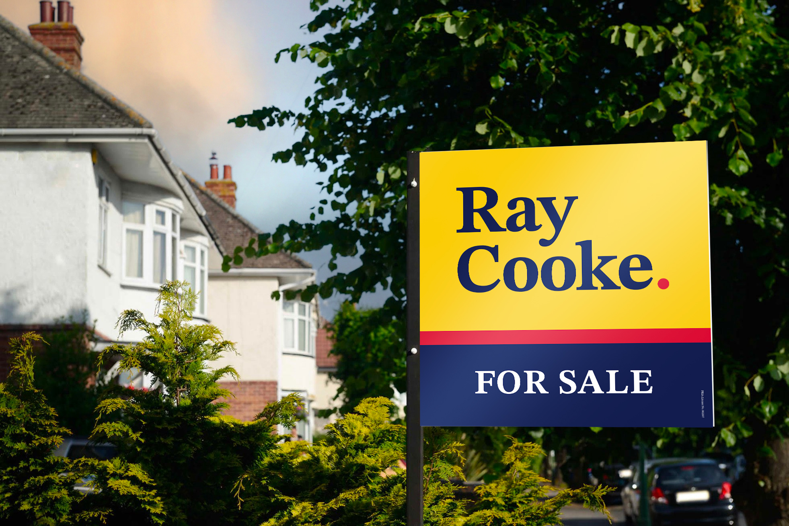
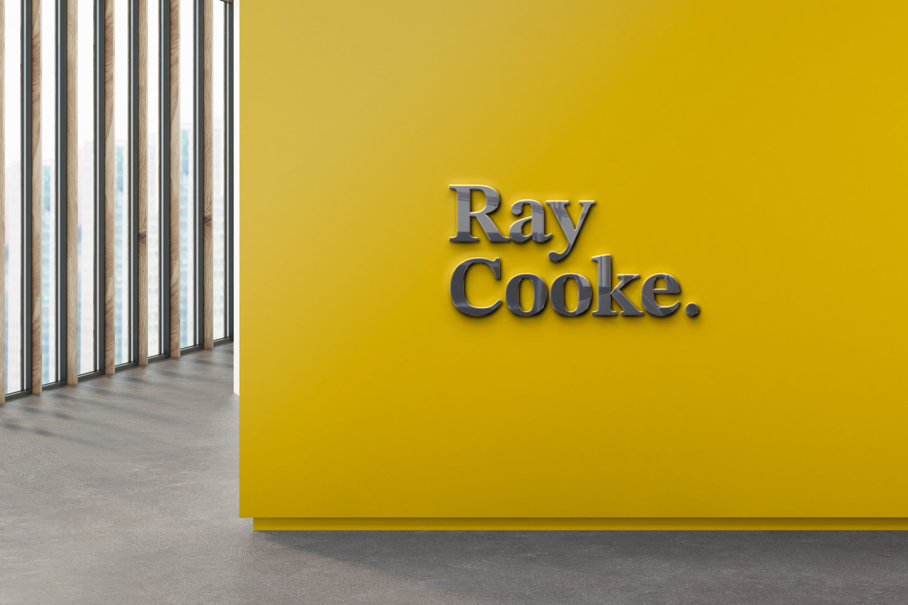

Ray Cooke Auctioneers
Reimagining the Ray Cooke Experience
Ray Cooke Auctioneers is the third-largest independent auctioneer in Ireland. Expanding fast in a demanding market, they needed more than a rebrand, they needed a property-publishing platform fast and accurate enough to power a growing office network. I delivered both.

Ray Cooke Auctioneers is the third-largest independent auctioneer in Ireland. Expanding fast in a demanding market, they needed more than a rebrand, they needed a property-publishing platform fast and accurate enough to power a growing office network. I delivered both.

The red dot
I defined the brand positioning and brought it to life as a distinct identity built on the essentials: the name and the service. The red dot evokes the completeness of the offering and the customer-focused care behind it, combined with an abstract minimal mark and typographic treatment of the Ray Cooke name.

Publish once, appear everywhere
The platform's heart is an API that takes property data entered once by an agent, on an iPad or laptop, including video captured on location, and publishes it in real time to the website, Daft, MyHome and even the window display units in each office, with future IoT devices in scope. At launch it was the first website in Ireland to do this, with map-based search that filters results instantly.
Enterprise thinking on a tight budget
The build used an open-source platform with a WordPress CMS to avoid heavy licensing, hardened with strict security protocols and hosted on enterprise infrastructure for zero downtime. Third parties offered no testing environment for data hand-offs, so I had a dedicated testing zone built to debug the data flows and guarantee a smooth launch.

An interface that disappears
The UI is light so the properties shine: consistent patterns in language, layout and design; careful hierarchy and spacing; and navigation that carries the visitor from first interaction to enquiry in one seamless flow. Staff publish new pages and content code-free, and the marketing team automates timely, branded messaging with purpose.
